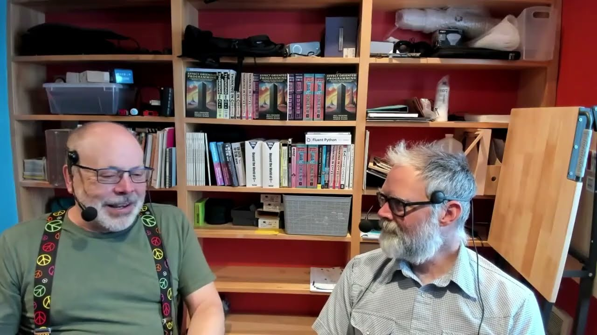

About this episode
Bruce & James recap the technology shifts of 2025 and look ahead to what may be ahead in 2026.
Resources & links
Transcript
Generated automatically by Spotify, so expect the odd misheard word. Select a timestamp to play from there. Download (.srt)
Read the transcript
0:01 Welcome to Happy Path Programming. I'm Bruce Eckel. I'm James Ward.
0:08 Well, it is a beautiful snowy day and crested view and it's been a little while since we got together. I've been on the road, but we thought it'd be fun to just do like a catch up. Catch up, recap on 2025. Yeah. And talk about what's. What's going on? What's exciting for this new year? So. Most exciting thing is that you can sign up for the Winter Tech Forum. Oh nice. OK, Winter Tech forum.com. Yes, Winter Tech forum.com. Great. Yeah. So that'll be fun. First week of March. Yeah, Get some people up here and Trusted Butte and yes, work on some fun stuff and we're going to be back at the Center for the Arts, Center for the Arts. Which is just so much nicer than It's a delightful space. Oh, it is a wonderful space, Yeah.
0:53 I really like The Art Room. The Art Room is fun and yes, and this time we'll have, we'll have the of coffee in the end, things like that and nice and the so cuz what we discovered the first time was that people were spending they, they had to do kind of a forced March. To go get coffee, Yeah, that's the. The one downside? Yeah, the location is a couple blocks from the nearest coffee shop. So yes, I think I ran over to the gas station and got a gas station coffee one time and. It wasn't, it was OK. It was OK. It was tolerable. Yeah, yes. So, yeah. So, you know, we're we're we're always tuning it up. And then this year we'll have, I think maybe as many as 10 students from the university because that worked out really well last time.
1:43 That was great having them. It was, you know, it's really good to have the, I don't know, the fresh perspective and, you know, the people who are getting the new good variety, Yes, new variety, new energy. So, yeah. So anyway. Well. Hopefully people can make it up here for you. And you don't, you're nobody's going to force you to ski or do outdoor activities, but that often happens. Yeah, maybe. Maybe we'll have good snow by then. Maybe. Yeah, I would think so. Yeah, so 2025 kind of a insane year in lots of ways. For me, it was lots of travel and then just trying to keep up with the pace of change.
2:28 Of everything, it was 2000 and five was the most rapid pace year in technology I've ever experienced. And we've been through waves of of change with, you know, the Internet and then the web and mobile and rich Internet applications and cloud. And, you know, we've been through these these kind of big, big moments in the past, but this one seemed much bigger and much faster paced than any other year of change I've experienced. But curious what how it was for you I. Would say that, yeah. Well, I would say the impact that it had on me eventually, I mean, I, I started using AI as soon as it was available.
3:18 I was in the middle of learning Rust. I was like halfway through and then AI came along and I started having it create examples for me that I, I want to know how this works, create me an example. And my learning accelerated and it was like, oh, this is great to have this tool. But this year and last year, I would say I started using it to, to try writing books, books like I've written in the past. And yes, you have to go in and, and do lots of editing and everything, but it does a ton of stuff for you. And so for a while I was thinking that, oh, this is, oh, this is a new way to create books, right.
4:06 Cool. Just crank them out. Just you can just crank them out 'cause you get this and you know, you can add your writing on top of that and your usual things. But then I, I, I don't know, it was around August and I hit AI hit a wall, which I didn't really understand it at the time. And all of a sudden I just kind of lost interest in the programming. And I think it's taken me a while to realize. So you remember when, like when Java was just coming in and before that everything, well we didn't, I mean, the web wasn't there yet. Kind of with Perl and stuff. Yeah, we had Perl and stuff, but I mean, there wasn't really this, you know, kind of universal web that we have now. And so for a while there was this period where people were taking documentation from, well, like Java. They would take the Java documentation and they would write a little bit, and then they would fill a book with the rest of that.
5:12 Yeah. And before that, getting the docs, like, that's a lot of what you paid for. Yeah. It was all that stuff. And then at some point, the Internet got to the point where it was like, well, you would never, I mean, so much trouble to look, even look through the the paper documentation. And that's just, it's all gone away and nobody even thinks about it anymore. But for a period of time, that was a big deal. You know, I was like, oh, well, that's how you find it. And I think my recent realization was that the kind of programming books that I've written in the past, even though, yeah, OK, go in and analyze it and everything, AI basically like makes unnecessary. Yeah, I don't look stuff up in programming books anymore. No, I I just ask it and it does make them unnecessary. And even though I started on several different books and, you know, made great progress in to them, I think I'm basically going to give them all up.
6:22 I mean, partly is that I don't feel the energy around them. Like the Python types book. I haven't felt a lot. I think there's still a lot of we were talking about this over coffee. There's still a lot of resistance in the Python community. There's they're not ready for it. They don't see the value. They're used to not having types and they, and I don't know if I want to try and convince them to use types. I don't know, it's just not as interesting to me to to try and proselytize that. And so I mean, the book is up there. You can, you can see what I've done so far thinking in types.com. If you go to that, you can find it. And I started working on a book with TypeScript because we're using it for the TypeScript effect book. And I thought, well, what I'd like is a book that people that you, Bill and I could go and use. Yeah.
7:22 And learn from without having to, like, go back to the beginning and wade through all of the basics. Yeah. You know something for people who know at least languages. TypeScript. The good parts. It would kind of. Well, yeah, yeah, in a sense. And and there's, you know, my GitHub repo has what I've worked on and I used AI for that and it was very helpful and I learned a lot. But then we we looked at Kit's introduction and and that's really anyway, I kind of think that the age of books like what I have written in the past is over. I think the effect book, well, try asking AI, yeah, what is in effect and you're not going to get very good results.
8:13 So I I still think. That there's still a gap that we can address. Yes, with the TypeScript. Effects. These are higher level concepts and those are kind of what I'm interested in. So that's for me a big shift. So the more instructional books are just use AI instead of of going to a book, Yeah. But then the the more conceptual teaching you a new way of thinking that still has has a place. Yeah, I think, I think what we're working on with the with the effect stuff because I don't think anybody including us has really come up with the great way to explain it yet. And so it's worth still working on that.
8:59 But I think we found even with if if you ask AI about effects, we recognize stuff from our own book that comes back. So it's like OK, so very. This isn't well explained so and there's. Still a gap that we can address and I think we should for the TypeScript effect book publish an MCP server or something for it. And so people that don't want to read the book and just want to get that knowledge into their AI can. So yeah, yeah, exactly. I and yeah, might as well go along with it. I don't know. All of the really successful things that I've done have involved a kind of leap into faith.
9:45 Like when I put out the the Java book originally, I just put it up on the web. I wasn't even planning on going to a regular publisher. And I had, you know, different and it was, I don't know, there's some argument about whether it was the first book that was freely published on the web or not. Who cares anyway? It, it was really early and it was a risk and well, and the way that we do the conference, that was a risk. That's so I'm I'm actually kind of most interested right now in things that don't make sense and yet work anyway. So complexity basically, not, not the deterministic part, but the because, because we get stuck in the ideas of determinism. Well, it's, I think the analogy with effect systems is very good.
10:37 It's like, oh, wouldn't it be nice if we had all pure functions because they're just so reliable. They always give, you know, there's no surprises. Easily composable, easily composable, completely deterministic. OK. And that's what people want. Like, you know, people in organizations who are managing and they go, well, we'll do, we'll follow the rules. Nobody fired gets fired for following the rules. So we're going to follow the rules. And, you know, we want formulas for everything, but those don't always work. They often don't work. It's a, it's a pit that you fall into. And so I'm interested in how do we change our thinking so that we go, oh, this isn't a deterministic problem. This is a complex problem.
11:24 This is it's, you know, the weather child or something like that is like you don't use the same strategies. And so just being able to recognize that you're in a situation where you're you're safe, comfortable, deterministic thinking doesn't work, which is a lot of things. That's kind of where my interest is right now. And I don't, I don't know where that'll go, whether that'll actually become a book or not, but it just seems to be forming itself in my head right now. So that's my that's what's going on. So 2025, it's been a year of of.
12:09 Big shifts, yeah. Shifts and what you want to work on and do and and in some ways motivated by the changes of AI, the AI have inflicted. On us, but I didn't even know that when it happened. All I knew was I mean, I, I had figured out how to use a an airless sprayer and because I was working on for painting my for for my steps. OK, I don't know if why that's the trigger, but I figured it out. I painted the steps very satisfying. It works so much better than other kinds of painting, but then right after that, I just suddenly go, I, I don't, I'm not drawn back to programming.
12:57 I don't want to do that level anymore. Maybe it's just I want to work at a more conceptual level. I'm not sure what it is, but but and then in hindsight kind of realizing, oh, AIS do the thing that I had done for the last. 30 So I've seen others sentiment from people online recently saying like that AI is kind of taking the joy out of programming for them in some way. And it's like the things that they enjoyed about programming have become irrelevant or something. I don't know if that's, I don't know if I've had that experience, but. Yeah, I wouldn't say that I would just because I'm still interested. Like when we get together and work on the book, I'm very engaged, but it's a different. It's not just putting out code.
13:49 Yeah, you know, just the lower level aspects. I started an assembly language. I don't know if you. Ever. I did. Yeah. You. Had to write assembly language. It's like, do you ever want to write assembly language again? No. No, because as soon as higher level languages came along, you go, oh, well, this is a tool that will allow me to do more. And assembly language is a grind. Yeah. And I think this is the same kind of thing. Yeah. That reminds me of the the blog post that you had shared, which I'll put in the show notes, but I highly recommend this as a read in this vein for anyone. Well, everyone should read it. The eternal return of abstraction, where programming was never about code and just a. It's a long read but but really engaging, well written. Yeah, entertaining.
14:37 And he takes a lot of, you know, clever quotes that he attributes to. I don't know, it's it. Yes. Yeah. Very entertaining and well written and. So I think part of his idea I thought is that, yeah, you know, we had assembly and then we had higher level languages and we had compilers and we've had these these stair steps of abstraction, TCP, you know, the web. Like we've had all these different kind of layers of abstraction built on other layers of abstraction now. And the AI code assistants are just another one of those. And so if you, and you've talked about this over the last year or more of the code, AI code assistants being like a compiler. And I think that it is a tool that is making it so, yeah, we don't have to manually write all the code anymore. And we can sometimes move faster and, and, you know, go into new languages like Rust and not have the the learning curve where you have to go buy the Rust book, you know, that someone translated from the documentation. And and so, yeah, it just is, is a new tool. But, but if we're still necessary being there to to oversee and and sometimes have to correct and and massage into the right solution and.
15:58 And we forget these things, like when higher level languages came along, the assembly language programmers were unhappy because their purpose was being taken away. And I think we're seeing the same thing. And no, I, I guess you can fight it or you can accept it. Some unconscious part of my brain figured it out and said, oh, this isn't actually the interesting problem anymore. Yeah. And so I'm, I'm, I want to follow the interesting problem, whatever that is. Yeah, maybe for me it's complexity in general, not just about programming, but just the general idea of how do we look at how we solve problems. It's kind of like a systems thinking kinda is approach. And yeah, I've got a few good episodes over the years on systems thinking stuff.
16:58 But I'd like to yeah anyway. So. I wonder how the systems thinking people are using AI in there. You know how they do systems thinking not to find somebody that's done. It's been in that realm of AI assisted systems. Thinking that would be, that would be very interesting, yeah. Yeah, so, so this past year for me, I think there's been a few highlights. A lot of it has been on the road talking about AI and teaching developers how to build on AI and it's been been really fun. A year ago I got into MCP and so that's been a big focus of what I've been, you know, learning and, and teaching developers how to build systems with MCP.
17:46 And so, so yeah, it's, I think for me, it's been, I've, I've written a decent amount of code this year and of course used AI code assistance to help me in places with that. I've had a few fun little side projects like the one I was working on this week was the Java docs dot dev site which is just a a a website that helps you get the Java docs for Java libraries. But IA couple months ago added an MCP server for it so that people can like plug that service into their code assistant. And then just started working on the the way that it works up until this week was that you had to give it a, a reference to a library and then it could go look at the resources in the library. But as I was using it, actually using the MCP server for it, I was like, actually sometimes want to do like a reverse search, Like all I have is a class or a package name. And I want to like then triangulate to the artefact and then and then be able to to then get, you know, further documentation from from the symbol, not just the library reference, not starting from the library reference, but starting from a symbol within the library. And it's actually kind of tricky because how do you know where that symbol exists to then go be able to find the Java doc resource for it.
19:04 And essentially you could have an index of of all of the libraries on Maven Central. There's, you know, millions of libraries. And so it gets a little tricky to to build and maintain that index. And aren't there duplications and symbols across all the libraries? There are yeah. And so that that also adds to the trickiness. And so, so just over the last couple days, I, I came up with how I'm going to tackle this. And it's, it's live now on the Java docs.gov website and then the MCP server. But the way that I do it is I do maintain an index since I had to do some Scala, Zeo, Redis stuff to like maintain this, this index of symbols and their correlation to libraries. But I do that essentially like on demand, like if you, if somebody loads a library, then I load it into the index.
19:51 So I'm not like going through the millions of libraries on Maven Central and which would give lots of false positives. I'm just doing it based on like what is somebody actually looked at on the Javadocs website or or access through the MCP server. And then that goes into the index. But it's going to take, you know, lots of usage of the dot Javadocs. Dot Gov website to be able to like fill out an index kind of completely enough. And so then I was like, oh, the LLMS actually have a pretty good understanding of this relationship between a symbol and a library. And the they're the way that they do this is modeled based on the knowledge of, you know, the Internet or whatever. And so there's less false positives by going to an LLM and asking it for the correlation between a symbol and a library because it could hallucinate.
20:42 I've told it not to hallucinate, but it still could hallucinate. You mean you? Have to You have to explicitly say don't hallucinate. Yeah, basically. Yeah, that's not just standard. Yeah, no, in my prompt to actually say like, like don't make stuff up. Like like if you don't know, don't, don't, don't just make it up. Just. Feel like we shouldn't have to say that, yeah. So, so now I, I the default when you look up a symbol is to look for symbols that I've already indexed. And then the fall back is to then go to the LLM and ask it. And actually the LLM is does a really good job of uncovering these things. The one caveat to it is that if your library is or the symbol that you're looking for is new enough or maybe doesn't have enough references online, then it's not going to be able to find it that way.
21:30 But yeah, I thought that was that was a pretty fun little project to to get me writing some code and and. Well, and you said you had found a problem with what? Something missing in Redis? Yeah, so I was using the Zeo Redis library and then I'm using I'm running this this site on Heroku and Heroku has a hosted Redis. It's actually Valky service, which Valky is a cool open source project. It's like a Redis fork or something and and so so I'm using that Heroku hosted Redis Valky service and in order to use it I and connect to it. It uses TLS. You have to make ATLS connection which is supported by zero encryption like HTTPS but for for socket communication. So in order to make the connection it needs to you normally would need to validate the certificate of the the TLS connection.
22:29 But on Heroku they do self signed certificates and so you can't validate them against a certificate authority. And so the ZEO Redis library didn't support turning off the certificate validation. And so I go into Claude code and I say add the ability to turn off certificate validation to the Zeo Redis library. And a couple minutes later it's done. I send the pull request, there was 1 little change that the the owner asked me to make, made a little change and then merged the PR and released it. And so within 12 hours, like something that it wouldn't have taken that long to do it manually, but the amount of effort that I put into getting that support into the library was a total of 20 minutes or something like that.
23:15 And so, yeah, that was that was cool. Yeah, the there's all these side effects that I one of the problems that I have with science fiction is that they'll do things like they'll go, well, let's assume that we have, you know, artificial intelligence, but everything around it stays the same. And I think the things that we don't see are, are the lateral effects. It's like, Oh well, now genetic engineering becomes easier now energy creation, finding new materials, all the stuff that gets accelerated or, and even things that we do with computers themselves. And like this is an example was like, Oh, well, now the open source community will probably experience a lot of acceleration.
24:07 Yeah, yeah. And we'll, we'll Yep. Well, and then and I think people are going to be willing to tackle bigger problems as well. Yeah, like I could have done that all manually, but I probably wouldn't have, you know, a mash thing. That's the big difference. Oh my gosh, the number of things that I have done where I go, this is a pain, but to figure out how to automate it, it's it's too much work. I don't want to, but it with the AI, I will ask it and I'll I'll end up with this, this, you know, whatever it is some little tool that makes my life easier and I'm glad I did it. But still without the help, it would just be like, it's a distraction. I don't want to do it. Yeah. Yeah. So there's more value creation in the open source side, I'm sure will happen this year for looking into 2026.
24:53 You know, we've lowered the bar for contributions, but it still in many cases does take experienced developers. I, I did review the code that it generated. I did test the code, you know, I, I did my human aspect to it. I didn't just, you know, fire off slop to this open source project which is happening. I think that the open source projects, some of them are getting frustrated because people just, you know, drop in these like horrible, horrendous, you know, no human in the loop kind of changes to projects and and then there's maintainability overhead to those and review over overhead and so. I want to say the solution to that is more AI on the on the side of the. So they have the AI reviewer and yeah.
25:41 And kick back. And it's like, OK, this is you didn't, you didn't do all the things. Kick it back. And yeah. And then that would filter out people just throwing slop at AI projects and overwhelming the maintainers. No open source projects. Yeah, yeah. I mean, I think the same thing in school, you know, people are, well, if, you know, testing, the value of testing is questionable in the 1st place. But if but people are going, oh, AI, you know, students are using AI to do all this stuff. And so it's breaking our system. And I go, well, one way to fix it is to use AI at your end to check yeah for the use of AI even though. The arms race of AI, yeah, there's some challenges there yeah, yeah.
26:32 So that's been a fun project and, and it's great to like have a real MCP server that anyone can use. And that gives me kind of more production experience of, of what, what it's like to have an MCP server and dealing with things like context window sizes. So initially the, the Java docs are all HTML and of course you can throw HTML at the AI. And I initially that's what I did with this MCP server as I fetched the Java docs and then returned the HTML. But it turns out some of these Java docs can be pretty large because with the HTML files for them. And so I, I then and somebody was getting an issue where it was overwhelming the context window of their AI just because. Of all the extra HTML.
27:17 Yeah, exactly. And so then one of the changes that I made was to just take the HTML and use J Soup, which is inspired by the Python soup library. Beautiful soup. Beautiful soup. Yeah. And so I just strip out all the HTML and turn it into text. Which is. Smaller, yeah, exactly. So I think it reduced some of these larger pages that were getting sent by the MCP server by a fourth. So much, much less context and stuff. So so yeah, I think it's it's been a fun little project for me to do some kind of real MCP stuff. And that one's all Scala. And it is fun to go back to Scala. I've spent most of the year in Java and Kotlin and Spring and Spring and Babel and you know, that whole land and and it's I don't, I think modern Java is, is fine.
28:09 Like I don't, I don't like get real passionate about it because I don't have an effect system and don't have some of the things I love. But but it's it, it doesn't. It doesn't annoy me. And the AI's are good at writing Java so that. Part yeah, I guess if I was to do Java at all I would definitely use the AI for sure to write the build file yeah remember, because for a while we were. Talking about solving the build. Problem and then AI came along and you're going yeah, of course I would just use AI to generate my build file. But yeah, I don't know it's well, I've always had a lot of problems with Java. So yeah, I'm glad that you're, that you're, you can, you can deal with it.
28:58 Muscle through and you can muscle through. Yeah, so. You've been teaching a lot of, so is it mostly how to use AI to generate Java Spring? Not on the code assistant side. I have done some on the code assistant side. So I have done like some, how do you integrate MCP servers into your code assistant? And how do you build your own MCP servers? And, but more of what I've been focused on is let's say that you're building AAI system. You, you want to have a chat bot on your a support chat bot, which I flew a bunch over the holidays. And so I got to use the United chat bot, which is absolutely horrible. And I think most of them are, most of them are.
29:44 And the reason why they're horrible is because they're generally not well integrated to the business systems behind them. So just as an example on the United one, I'm like, I'm flying tomorrow and you upgraded me, but I need to be downgraded so that I can sit next to my son who's on a different ticket. And the first question that asked me is what's your confirmation number? I'm like, you are United, you know, what flight I'm on tomorrow, like be able to pull that information in. And so it's so a lot of what my focus over the last year has been on is teaching people how to build these integrated AI systems that are integrated with their domain logic with their business processes and how you would expose your business processes as MCP tools and. And you happen to be using Java and Spring to do that? And it's it, it was a choice to focus on that because so many business systems are built on Java and Spring. It's like that's the place where where there's a lot of potential value to people building these AI. Systems, I understand, yeah.
30:46 OK, I didn't realize that. OK, so the primary focus is AI, the implementation is Java and Spring because that's what that's what all. The vast majority of businesses are built on the COBOL. Of the modern age. I actually I'm working on a blog post to to counteract the job of being the COBOL. Oh yeah, of your argument because against it. Yeah, because there actually has been a ton of innovation in the JVM and the and some innovation in the language that I think makes it not super consistent with it being COBOL. I think COBOL has been stagnated for a while as far as I know, but. Well, no, no, they, they updated it and, and I think as recently as the late, you know, the early 2000 twenties, there's a new yeah, people are. No, I, I think it's not.
31:37 I I think the analogy is just saying, oh, this is now the language that everybody uses for business. Yeah, I think that's yeah, yeah, that's all it means. It doesn't mean that there's any relationship to the features of the link. Yeah. So, so just so in my blog post, I want to go through, here's all the features that have been added probably since you looked at Java last, because a lot of people, you know, they did Java like 10 or 15 years ago and that was the last time they looked at it. And there actually has been quite a bit of innovation and things that are very unique to Java that don't exist elsewhere. So as an example, the virtual threads in Java are something that is just a phenomenal, great feature of the JVM that you get just out-of-the-box.
32:24 All you do is you turn on virtual threads and boom. Like, like you're not blocking actual OS threads when you which we come up with all these libraries and ways to do that on the developer side, but why not just have it in the VM that you're running on? So, so yeah, my blog post will go into works all the details. Yeah, there was some initial challenges with it. I think Netflix was has a blog post where they talked about what their initial experiments of turning on virtual threads and some of the chaos that ensued and then how they worked with the the JVM folks to fix some of those issues. So, so I think now it's pretty, pretty solid and most people should be able to just turn the flag on and boom, get virtual threads and not have to rewrite into monadic async stuff to to get the same kind of benefits.
33:11 So, yeah, so there's, there's, I think there's a lot of good stuff there. It's I, I don't, yeah, Java is not my favorite language. I, I think if I'm going to choose, I'm still going to choose Scala, even though there's some challenges there. And then if I can't use Scala, I'm going to use Kotlin and, and if it, and if that doesn't make sense, I'll use Java. But then TypeScript also like I, I, I really try to like, push myself to like do more TypeScript. And yeah, I think that's been a fun journey over the last year with us working on this TypeScript effect book. I think there's been a couple avenues of that that are interesting. 1 is just TypeScript itself and and learning some of the totally weird things about that language because they have to.
34:00 Work with JavaScript, the C problem again. Yeah. And it's like we got this language everybody uses and now we're trying to move people forward. And it's like, OK, so, but still some things that we've come across, I mean, like construction Foo as construction is probably never gonna be intuitive to me. No, it's like, cuz, I mean, we played with it and it's like, if you believe off the as construction, it behaves differently. Yeah. So you know. There are some there are some things that that things in there. You're just like I. Feel like they, you know, a different keyword. They were trying to yeah. Every time people try and say, oh, we're gonna, we're gonna be a small language. We're only gonna have a few keywords. I don't think that just never works out the keyword word conservation. Sometimes you need a new keyword. Yeah, and that solves the problem. And it's not that big of a deal.
34:55 Yeah, but. But overall, I think the effect stuff is, is good and it's helping a lot of developers move into, to a new realm of, of ultimately building more composable, reliable software. And so, so I, I in my Twitter feed, I see a lot of people kind of discovering effect. And it's funny because they don't know the history of it. They don't know like, like where where it came from. And they're just like, this is great and I love it And, and thank you for solving this composability problem for me. And like, yeah, we've been doing this for a long time in other languages, but it's great that it's now kind of reaching into a new realm of developers. Yeah, Yeah. I think it's, I think it's fair to say I, I mean, we were talking about this this morning, the idea that I don't think Effect could have been created from scratch in Java, in TypeScript. I think it really had to be designed in Scala because otherwise all of the we were just, I mean, to do a translation from Zeo to TypeScript, OK, because the design is already there and tested, but boy, I can't imagine trying to do it from scratch.
36:12 Yeah. It's just, Yeah. It's not a, yeah, let's say, not a research language. Yeah. I think that's a wonderful thing about Scala that you do have these these kind of bleeding edge research projects being done. Yeah, and. And the language itself in research project. That's yeah, it's just, you know, it's, it's fun to be on the, the forefront of innovation. And yeah, there's other languages and other effect systems and other things and that that you could look at like, oh, winter tech farm. I want to spend time with Flix. So that's that's kind of top of my list for for things to explore because yeah, there certainly is lots of different realms of innovation. And but the one that that is most been most relevant to to me has been things in the scholar world and and effect oriented programming stuff. So.
37:02 Yeah, because flicks has effects built into it and it also seems, I mean if you go to the website it seems to be complete ready to, you know, feels like it's ready to go and can't really tell it till you start trying it, but that's the impression it gives. Yeah, yeah, we'll spend some time with that winter tech for him. Interesting. Yeah. So on the effect oriented programming stuff, I think we're with all my travel we've been kind of inching along with with that book. Hopefully we'll get some more time to to spend on that, but this year, hopefully I won't travel quite as much in 2026 as I did in 2025, but would be great to continue making forward progress on that. I'm I'm OK. You know, The thing is, yeah, it's nice to meet weekly, but there are sometimes that we run into things that I feel like maybe the fact that, you know, you and Bill and I are traveling and we don't get to meet it allows it to sort of gestate. And we, we can kind of, I don't know, some of these things don't, you know, just just pop together. Yeah, and I think we've had we've all had these moments where we're like something was percolating in the back of our head and then we're like, oh, we share on Slack like, oh, I discovered this thing or what do you think about this idea? And so the recent one for from me was that I, I think that in effect systems, every side effect requires a a thing that that the effect is acting on which we would call the environment or a layer in in Xeo and TypeScript effect. Something that has to be provisioned. Something that is going to be this bridge to the outside world.
38:51 And if you if you but if you don't have that, then it's probably not actually in effect. Sure, in in TypeScript effect and in Zeo, we often wrap things that aren't really effects into the effect type just because it makes it easier to to compose a program in that way. But but at its core, an effect really does require that that dependency injection kind of piece. Because just as an example, if you have an effect that's going to fetch the current time, that is a side effect and you need to provide the clock as a dependency to be able to execute that effect. Now, the weird thing with 0 how 0 and TypeScript effect do this is that the common dependencies that a system may need are just magically, maybe not magically they're they're implicitly provided to you. And so so it does actually you do have that clock dependency, but you don't actually see it in your code. And so it gets it's maybe one of the the trade-offs that you have to make between the explicit, implicit and comment like do you want to always have to specify that this thing needs a clock? Would that just be too much boilerplate? And so.
40:08 Yeah, I think there's there's they've made some trade off probably. Be explained, but yeah, and the clock typically is something that you actually just you're not thinking about it in terms of IO. You're going through the, you just go to the operating system. It is actually IO because it is off the the CPU even if it's on the same die or whatever. But you know you have all these clocks and this and you have to do an IO operation. But you're leaving the registers. You are and and that's all buried in the operating system. So, you know, we're used to being able to get clocks and I don't know if operating systems do they. Do operating systems provide random numbers? Yeah, it's an OS, Yeah. That's an OS too.
40:54 OK. So that's, you know, so you think of those as OK, those that's really an IO thing cuz I'm going outside and I'm getting something that is unpredictable. And so yeah, that's, and that's the, that is, I guess maybe that's the main boundary is the predictability versus unpredictability. Yeah, even. And that almost always shows up as IO. Yeah, maybe there's some situations where it wouldn't be, but to think about it, it's like it's predictable. We can have it as a pure function. It's unpredictable. Now we have to do some other things. Yeah. Yeah, a lot of people when they first discover in fact primarily the the TypeScript effect one they they the value they initially see in it is the air handling the ability to in types model that something can fail with a particular error with with many different errors as you compose. And that's certainly a useful part of effect. But you really don't need an effect system to do that. You don't need to go to effect on your programming just to get that.
41:58 You can just use it some type if you want, right? Right. I gave a presentation at a couple of picons ago showing here's how you would create that kind of system. Yeah. And it, yeah, was. I did not say effect. Yeah, yeah. Yeah. And you don't need to, right? You know, it's doesn't, it's a thing, Yeah. And so. So the the thing that I think we've been wrestling with is how do we explain effect systems and effect oriented programming in a way that is about what problem are we trying to solve? And yeah, there are things that you have to do to be able to solve that problem. Like you need to have a way to provide dependencies to this thing. You have to be able to know did the thing fail or succeed and and and effect on our programming.
42:44 We've modeled that into the type system so that it can all type check and we can validate that you handled all the errors that were possible and you provided all the the environment, the requirements and dependencies. You have the explosive nature of exceptions. You you go, no exceptions, because that just blows everything up. Yeah, I mean exceptions. You can use exceptions as an error type, but you don't have to. You can. You can model your error types with whatever you want and they, at least in Zeo, the errors get summed together. I think in in they do it differently in TypeScript effect due to some weird thing with TypeScript, but it's like an intersection type or something. Yeah. But I think you still get the effect of, oh, if we compose these operations together and if any of them have an error, it comes out as the compose.
43:37 That's right. Yeah. Which is I think the the ultimate goal is to say I don't want to have to think about every error just because I'm putting this thing in or that thing in. I want anybody to compose these things and the composed item operation. Is actually the composition of the dependencies and the errors, yes. Yes, and presumably the the provisions that you have to give it which, yeah, I was a little confused about it first. But then the one of the things you you said this morning was which I think is really key is that people for, for this to make sense to people, they have to have built some larger systems where they can't just shoehorn the various, you know, you can't just hack it together. You're just going, no, this is too big. We have to have a provisioning phase and we have to, we can't just throw exceptions Willy nilly because they get lost. We have, you know, the system.
44:43 It's a scaling problem. Yeah, yes, we're up to a scaling scale and and also managing all the code whenever we need to change things around a little bit just becomes overwhelming. And that's see that I think is the. Refactor ability and. Is the market, the marketing argument for this is to say, okay, here are the problems that we're solving and you're not gonna see them unless you're starting to deal with bigger systems. Yeah, yeah. And then maybe that, then maybe we'll avoid confusing people who haven't gotten to that point yet. Yeah. Yeah. Why are you loading all this extra stuff on to me? Well, it's not extra.
45:29 When you get to a bigger system, it actually reduces. Yeah. But in a little it's. Yeah. We run into that scaling problem a lot in program. Yeah. It's like, hello world. It's easy. Yeah. Just say, well, I guess they, I guess they finally fixed it in Java where you can actually say hello world after, yeah, 2 1/2 decades or whatever. Now you can actually do it. But it's like, anyway, hello world and then and then when it gets bigger and bigger, all of a sudden it just yeah, the scaling issue. Yeah, yeah. You mentioned Kit. He has some great resources on explaining exactly this with TypeScript Effect is that initially when people look at a TypeScript effect application, they may be like, Oh my God, that's a lot of code just to do something very simple and a story that's often not told there.
46:18 Is that all? There's so many different concerns that are being managed by this layer of abstraction. That you don't need in Hello. World. Yeah, yeah, yeah, exactly. But. You do need when your system scales up and a lot of that stuff falls through the cracks and systems that people build now, because I don't know, I mean, either they don't know about it or they forget, or it just seems like too much work. And we're just, we're just trying to get something up and going. And wouldn't it be nice if you could get something up and going and those concerns were addressed automatically so you didn't have to go back and refactor later, which doesn't seem to happen as much as we wanted to. Yeah, I guess there's the meta topic about abstractions. And like, how do you see the value of an abstraction? It's when you get to a certain level of complexity that you need that abstraction.
47:15 Or maybe you're opting into like a larger ecosystem that gives you, you know, composability or whatever. So I'm sure that at some point when HTTP was created, somebody was like, that's an unnecessary abstraction. I can just use TCP for this. And it's, I think the case it goes back to that blog post on abstractions. It's like we keep adding these new levels of abstractions and you may not see the value in a certain abstraction until you get to a certain level of complexity or the need to opt into an ecosystem like in the ZEO ecosystem. When I was working on that Java Docs project, I was just like, like there's a Zeo Redis library. Yeah, it didn't quite work on Heroku right out-of-the-box, and I had to do that whole thing, but I could just pull that in and I had it set up in minutes, you know?
48:07 And so that's. You didn't have to do all the little fiddly wiring because it's a operation that encapsulates its own side effects. And my, my observation has been, oh, and, and that was something I got not from the Zeo docs, but from the effect docs where they said that. And I initially was like, oh, that's a much clearer way of doing it. But then I realized, oh, but that's still not, that's just describing how, yeah, it is not describing what? And So what we really want to say is, oh, it's an operation that's easily composable and shift, You know, you can shift things around easily. And ultimately, you don't have to do the fiddly little wiring for everything.
48:54 Yeah. And so that means that if you go, this should happen before that it becomes an effortless process. Or if you want to do what you did, I can just stick that in there and the wiring is taken care of for me. Yep. Yeah. And I think some people may look at that abstraction of effect systems and say like, oh, I've got dependency management, you know, with Spring or whatever, or I've got air handling with a sum type or like, or I can do concurrency in this way or whatever. And so why is it that we need a new abstraction that encompasses all those pieces together? And I think that's part of the missing piece that will hopefully tackle in the TypeScript revision of the Effect oriented programming book is like like the bigger picture of why effects matter and why you need dependency management, why you need encapsulation of state, why you need the air channel, why you need all these things to get you to this this thing that you're ultimately trying to accomplish. Yes, the composability of operations, Yeah. Yeah, the we, we, we hoped for that with objects. We thought that maybe objects would solve that, or we could just now we've got the, you know, these libraries, we can easily stick them together.
50:11 And there were aspects of it that were better. Yeah, I think I'm to the point now where I would say it's the core of an object is a type. And the type part was what made it work really well. And hanging every possible method off of it. And then the inheritance thing and all that, that didn't help, but we kept at it because we go, oh, but the types, you know, we weren't thinking this, but ultimately it was like, oh, but the types were useful at. Type is a really useful thing. Yeah, yeah. Modeling the world and inheritance hierarchies and all that. The tentacles of how the objects all interconnect in mysterious ways and then mutate state.
50:57 It's like that's where things went off the rails and the narratives it. Did, yeah, yeah. So. So I think what we're seeing is OK, let's version 2, let's look at it. And now what we're composing is not objects, but operations and. And in order to easily compose them, we have to encapsulate the operation, has to encapsulate its side effect. But that's an implementation detail what you experience when you go, oh, I need this library, I'll stick it in Wiring happens because of the way it's designed. And off you go. It only takes you a few minutes. And Bill has talked about this. He goes, oh, something that would have taken weeks to change.
51:47 I can just do this and it's working. Yeah. It's like, how do we? Compile to invalidated refactorable testable. Yes. And how do we show that to the point where people go, ah, it's worth the effort? Yeah, because it is. Yeah, because there is overhead to. You know, because you're changing, you're changing your perspective on what programming is from. I don't know what, I guess wherever you're coming for object oriented programming or even functional programming, you know, I'm, I write code and it does stuff. And if I have to, if I have to do some tweaks here and there to make it work fine. Oh, now it's hard to change. I don't want to change it. So I'm going to resist consciously or unconsciously making my code better. And then it becomes fossilized.
52:39 Yeah. And so if we could show. Oh, now we're just really. We've actually at least moved closer to having this component. It's one of the big challenges that we face with explaining effect oriented programming is that as we're saying, the value of it is much more evident in a complex system. Yes, it's very hard to represent a complex system in a book. Yes, right. It's like we're not going to build a CRM and you know, have all the code for the CRM and be like, look how complex this is. Now let us show you how effect makes it easier. And so it's I think at one point we we wrestled with just like the hello world. Like do you start your hello world with a single effect? A single effect on isolated from everything else has 0 value. Like, yeah, like why would you ever have a single effect? The whole point of, of effects is to compose together multiple things.
53:41 And so, so I think that's, it's one of the challenges we face. I don't know. Hopefully in 2026 we're going to figure this out. I don't think it connects with someone who hasn't struggled with a bigger system. Yeah, yeah, if, if, if you've only done, you know, small utilities or. Yeah. What was the last thing in a microservice? Oh yeah. You know, microservices, That's, that's another attempt to create a kind of a composability system. All of these things will be isolated and we'll just talk to each other and it'll all be great. And it's like, yeah. That's maybe helped. Help some maybe I guess, but I've had. I've had similar challenges with MCP and explaining why MCP because MCP has this abstraction over essentially RPC over like Jason RPC, right?
54:43 And so one of the questions that I often get around MCP is why do I need this MCP abstraction over it? Because I could just do raw Jason RPC or whatever, you know, whatever you want to do. And the answer is very similar to the effect systems. It's like. Well. If you were to in your company start building MCP or pre MCP, you were to start building these like LLM integrated things, tools that you're that your LLM could use doing whatever is you'd probably build about six of them. And then you'd say I probably need an abstraction for all of these so that there's commonality of how these things work, then I can maintain them and get some reuse and all this kind of stuff. Like you'd probably build your own abstraction. And so the value of MCP in a lot of ways is that it is your abstraction over those things. And if you're only building 1 tool, if you only ever plan on having one tool and never integrating with any off the shelf MCP servers, then maybe you don't need MCP. And so I think it's very similar to our challenge with effect oriented programming is like you have to kind of at least anticipate or expect or be in a level of complexity that the abstraction fits with with what you're trying to do. Yeah, you have to run into scaling problems and and also be aware that you've had a scaling problem and that you need a solution to it, because otherwise. And scaling can be in multiple different, different vectors because it could be team size.
56:13 So, so one of the things that that people complain about with effects is like, like, you know, I'm just one developer. I'm, you know, the only person working on this problem. Like, like, I don't see the value. And it's like, OK, now think about if you're in an organization with 1000 thousand 10,000 developers and how you're collaborating together. And that's where having things represented is types. Having the error values represented in those types is really valuable. And so so some of those things aren't evident until you get to scale not just not just in complexity, but also in in. Communication boundaries, yeah. And where you need, you need a consistency at those boundaries so that it isn't just a free for all. Yeah, Cuz we, we've been doing that for a while now and we've seen the effect of a free for all, which is that you get one of these ossified systems that sometimes becomes unmaintainable and people have to rewrite it from scratch. That's expensive.
57:16 Yeah, yeah. Yeah. So 2026 will keep chipping away at explaining effect oriented programming. That's I'm looking forward to that. Yeah, it it's. It is an interesting problem to solve. Yeah. Yeah, and just it's very, it's stimulating. I have to say I'm glad that we did this. I for the first few years was just I was in a stupor. I had to say I just I. What are we even doing here? I. Had no idea what what was happening. So the benefit of that is that I know what it feels like to be confused about the thing. And so maybe give me the ability to explain it better because I understand, I can empathize with the people are going what the what the what?
58:11 Why would you do this? I can write this program without all of that and it works fine. And the answer is OK. Yeah, do that until you run into a problem. Then come back and talk to us. I, I guess my naive hope is that that people will, developers will, will be able to see that at some point they may reach the point of complexity, that they're going to need something else. And that the overhead of rewriting into the thing versus having started with the thing that the abstraction that's going to make it easier down the road is worth it up front. And maybe that's not universally true. Maybe they're, maybe you just are like, hey, I'm never going to, you know, get to a level of complexity and team size or, yeah, I don't know, system complexity.
59:03 That goal in the book, yeah, I think what we can say is OK, this is for when systems get more complex than you can manage and, you know, when you feel like everything is out of control. If this doesn't make sense to you now, come back then and it'll probably make sense to you. Yeah, some argument like that, because I think trying to compel the ideas without that context of we're building a bigger system, but you've hit a scaling issue without that context. I don't know, I guess I've seen it's like types in Python. Yeah, it's like there's a ton of programmers out there who are going, why would I add this?
59:56 You know, initially was doing it on bigger things, but then I've gotten to the point where it doesn't matter because it gives me information. It gives the compiler, well, the type checker information gets it gives the LLM information. I feel like my, my Python generated code has been better because I say always use types and I can read it better. You know, it has it has valuable information and but there's a lot of people. People out there who just say, I, I can do it without that. Yeah. And it's like, I guess you just say, all right, as long as your thing keeps working for you, I'm. I can't really talk into doing more.
1:00:42 Yeah. Yeah, until you hit the problem. So I think what? Will at least move the needle on. This is when the AI code assistants are better integrated into the type checkers and then later once they're integrated into the effect systems. And So what I mean by that is right now your, your AI code assistant that you're using with Python, even with the types, it's getting text information about the, you know, your source files. Yeah. And what if instead the LLM, your, your AI code assistant could actually go out to the compiler and be like, tell me about this type, What parameters does it have? What other things are available here?
1:01:27 And get all this information about the AST of your program, not just the textual representation of the program. So what if the code assistant could do that? Then all of a sudden your types have a lot more value because your AI code assistant has a much deeper and better understanding of the world that your code is living in. So that's probably gonna happen in 2026. We'll get these AI code assistants integrated with type systems in ways that types all of a sudden become a lot more valuable. But then the next level of that is do the same thing with effect systems and be able to have all the knowledge about what the effect system understands with dependencies and air types and all you know, the things that are happening and being managed for you by an effect system. Then do the same thing with the code assistance.
1:02:13 And that's where then I think we move, we can move the needle on the applicability of or the reducing the resistance to the overhead because the value becomes much higher. Yeah, right. And if, if it be, yeah, if you lower the bar of figuring it out, if you can say here's the problem I'm trying to solve, solve it using a factor 0 or whatever. And it because my experience with Rust was I had gotten a good way into it just by watching videos and trying things out. But as soon as I was able to go, huh, I wonder how this works. Write me an example of that. It just accelerated my understanding. And so because your understanding doesn't just happen to be, however, a book or a tutorial or whatever goes, yeah, your understanding, you go, I don't understand this thing.
1:03:10 You can ask, you can get an example. You go, I get it now. And I think that's, yeah, that's going to really lower the barrier and allow people to to experiment more and, and then start building their own bigger systems. I I think ultimately what I'm interested in, I've always been interested in, is the power that tools give smaller groups of people. Because all the studies that I've done with organizations is when you get a certain size and you have to bring in management, at least industrial age management, which we're still stuck in, then everything grinds to a halt.
1:03:55 And so if you can give these powerful tools to smaller groups and avoid, you know, yeah, as much management as possible, then you're going to be able to move forward faster and create much better, more interesting experiments. Yeah. Yeah, I think it's going to be a exciting year. So I'm looking forward to diving into all that. The other thing that I've been doing a bit with and look forward to doing more with is an agent framework that we haven't had Rod on. Have we to talk about in Babel? We had a Did we have Rod on to talk about in Babel? Rod Johnson Yeah, we did have Rod. Johnson we did, but this was like pre inviable. Maybe I don't have to look back at our we did have him on the talk about him.
1:04:43 OK, so the inviable agent framework Rod continues to just do some really amazing things around building AI systems that are more deterministic and more. You know a lot of the benefits we talked about with effect on your programming like like you want to be able to have better composition. You want to be able to, to have logic that's shared across the different parts of your, your large enterprise agent system. And so, so I think he's doing some, some really interesting stuff. He his most recent one was on rag, which rag is this technique for how you physically injected it into an LLM. And so he looked at all the different approaches that people were doing with Rag and you know, it's like, these are all wrong, like this is not the right abstraction. And so as Rod often does, which I think is amazing is he goes back to research papers and he mines through research papers and he found one that I think was like another part of in Babel was came out of like game building games. And he's like, this is the right, this is the right abstraction for rag.
1:05:55 And so, so he, he, we just did a, a, a video live stream with, with Rod a couple weeks ago on the coffin software podcast where he described his whole approach to rag and how it's how it's this new way of doing it. And I think he's totally right. Like we've the the, the, the rigor of doing this and not the like sloppy, Let's just throw it together away. But really, it took him a while to add rag support into Mabel because he really wanted to come up with the right abstraction. So I'll have to say I'm excited to dive further into Mabel in this year and build some interesting stuff with it and teach people how to build more reliable. I want, I ultimately I want the United chat bot to actually work and that's my end goal is. Getting United Airlines.
1:06:45 Chat yeah exactly getting them to to to build something on in Babel so that I I don't every single time have to talk to an actual agent right. I'd like to just talk to an AI agent once. Once with English. Yeah, some. Of the things that you see with us, with those AI, we're here to help you. What do you want to know? And then it like you ask it something about its own system and it doesn't know it, you know, and you're just going, oh, really? Yeah. This. Well, yeah, I mean, the web was terrible at first. Exactly. And we were at that phase where things are early and we're coming up with the better abstractions for these things. And so I'm excited about diving further and all that in 2026. Yeah, Yeah. It's still pretty interesting, yeah.
1:07:32 So any other like things you're excited about for this year? I'm, I'm, I'm still in this transition base. I'm still just kind of trying to figure it out what what value I can add to the world now that it's not it's not really programming anymore. Yeah. Other than the stuff that we're talking about, yeah, just, I mean, I've been doing a lot of painting. I've been doing more painting and just took a painting workshop, which was really good. Nice. And so it's exploring all kinds of stuff with that, different mediums and and, and. Yeah.
1:08:18 And some of the experimentation. Bill Frazier has been working on a we've always tried to replace the open spaces board. And I think he's actually on to something now because what we always did was we would say, well, let's just take the open spaces board and somehow put it into the computer. And Bill said maybe we need to rethink this from, you know, let's start from the fact that everybody's going to be using their phones and work out from there rather than this idea of post it notes on a board. And I think he's really on to something. Yeah. He's hoping to have something that we can try out at the conference. Nice. So yeah, So that should. Be he showed me the latest version of it, yeah, a couple weeks ago and yeah, it's it's getting really good. There's a lot of, there's a lot of good stuff in it, but we discovered a few bugs on iPhone.
1:09:15 So the Safari browser or whatever was doing something different than the he's on Android. And so right. So I think he pointed as AI the problem and said, but one of the challenges with that is like to set up a the AI agent is going to be most effective if you can give it a test to run and UI gets tricky because it's like, like, all right, am I, am I going to spin up an iPhone simulator for the AI to use? And you certainly can. There's just some challenges with with that so. Yeah, yeah. But I think it has a lot of promise and I think it's something that could be used for anybody who want, you know, I think it would make it easier for people to do open spaces events.
1:10:03 They have this, this tool. So. So I'm pretty jazzed about what he's been working on for that. What I should work on with that is we actually, it couldn't be that hard. Well, maybe. Maybe I want, Yeah, saying I'm not just getting dreamy about. What you say? Dreamy about what what I could, what I actually have time to do, but we should have a chat bot in the in the new open spaces app. And so you can open the chat bot and you could just natural language do things as well, which and then it would be interesting to see like how many people would prefer the UI to the chat. Yeah, it's, I feel like the UI is pretty straightforward so, but yeah, yeah, anyway, yeah, it would.
1:10:54 Be a fun experiment. It could be an experiment. You could do it as a hack day project. Yeah, yeah, yeah, actually that weekend, yeah, just. And then we could and we could try it out, see if it works. Yeah, yeah. And if it works better than the United Airlines chatbot, I'll be happy. Well, I think you just said everything will work better than that right now. Yeah, Yeah. All right. Well, happy 2026 and yeah. We'll. Hopefully do more episodes this year. I've I just need to be on the road a little less. Yeah. And there's, yeah, there's some interesting people. I think we have potential to to talk to so. For sure. Cool. All right, all. Right. Yeah, go ahead and sign up for the winter tech for him, everybody. Yeah.